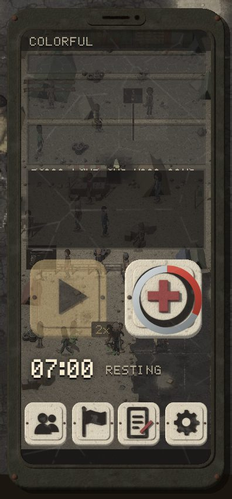

@gdl_abuela_rosyMEXICO
my grandson is in las vegas. if you see a tall boy with my nose, tell him his grandmother still sets his plate.
Guadalajara, Jalisco · mexico
The phone's feed now talks about the whole world, not just the valley: Salt Lake, Tijuana, Manila, Lagos, Beirut and 30 more places, each its own voice. About 4 posts in 10 come from beyond Las Vegas. This is the real demo on an upright phone, CAMP pressed so the clock runs, for about a minute. In that run 6 of 14 posts came from beyond the valley.

The full words of the post on the glass are on the right, because the strip on the phone still cuts long posts in half. The fix for that (one post owns the whole strip, slightly tighter type) is FIXES' job and is in flight.
132 world posts from 37 accounts, every one a draft. Every fact under them comes from your own files (the crash around 2050, Project Angel, the Texas government attempt, the city in the gulf nobody names, the lab animals on the 15, the Moon robots); the rumours are allowed to be wrong. Anything that would be new lore is not posted: it is a question waiting for you.